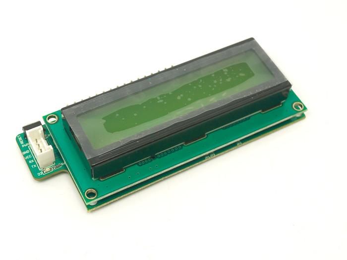
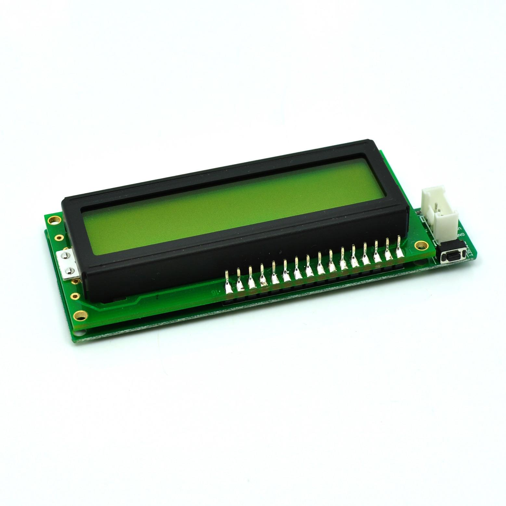

Serial LCD Driver is an UART based LCD1602 display (Hitachi HD44780 or a compatible LCD). It can control LCD1602 only with two I/O port pins (UART Tx and Rx).The VCC and GND are the only additional pins required for operation. Conventional LCD drivers use 7-11 I/O port pins, whereas Serial LCD saves all these additional I/O pins. Serial LCD uses AT89S52 for implementing the UART Driving logic. Character, integral number and float number is supported.
Serial LCD includes:
Now Grove - Serial LCD has upgraded to version V1.1. Here is the introductions for different version. Clicking on the images below will take you to the documentation for the corresponding version.
 |
 |
 |
Here lists the comparison between various versions of Grove - Serial LCD:
| Parameter | V0.9 | V1.0 | V1.1 |
|---|---|---|---|
| Operation voltage | +5V | +5V | +5V |
| Communication Protocol | UART | UART | UART |
| Backlight Control | No | Yes | Yes |
| Power Control | No | Yes | Yes |
| Library | SerialLCD Library | SerialLCD Library | SerialLCD Library |
| Power Up Reset | No | No | Yes |